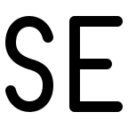
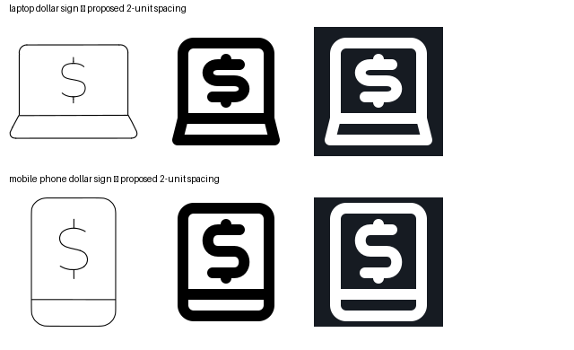

1. pin — PASS
Pin narrowed from VRECT_L to VRECT_M; bigger circular opening and a longer detached baseline restore the source proportions. Point remains symmetric and clear of the baseline.
SVGAll ten completed: eight strict passes and two user-approved dollar-sign spacing exceptions.
Pin narrowed from VRECT_L to VRECT_M; bigger circular opening and a longer detached baseline restore the source proportions. Point remains symmetric and clear of the baseline.
SVGDeeper basket, small curved right handle, restored support curl and two equal outlined wheels. Source asymmetry and shopping direction preserved.
SVGNose top-to-wing-root height increases from 6 to 8 units (one to three units of straight neck below the round nose). Upright VRECT_L layout preserves swept wings and paired tail planes; both sides derive from x=24. Wing/tail tips remain angular to meet clearance.
SVGCap now sits on its band and open face instead of floating above a circular head. Left tassel restored. Radius-8 circular jaw ends at y32; symmetric shoulders peak y36, giving the avatar-required zero ink gap. Detailed gown V and tassel droplet omitted because they crowd the 48px geometry.
SVGSmaller dollar sign exactly matches the proposed 2-unit-spacing alternative approved by the user. Reviewed at native 48px and 144px in light and dark themes. Device outline and divider retained. Four-unit strokes retained. Full QA accepts the drawing-bound exception; automatic strict findings remain recorded.
SVGSmaller dollar sign exactly matches the proposed 2-unit-spacing alternative approved by the user. Reviewed at native 48px and 144px in light and dark themes. Device outline and divider retained. Four-unit strokes retained. Full QA accepts the drawing-bound exception; automatic strict findings remain recorded.
SVGLonger finger creases restore finger-to-palm proportions. Thumb perimeter no longer crosses itself. Four fingertip widths share radius4 and pitch8. HRECT_L remains broader than the source because four finger widths and a thumb consume the 40-unit horizontal budget; thumb is more upright than the reference.
SVGDeeper tapered basket, right grip, continuous lower support and attached equal circular wheels restore missing chassis structure.
SVGTaller tube and smaller smoothly joined bulb replace the oversized bowl. Separate mercury line and central dot match the supplied source.
SVG
S and E now share cap-height and baseline, correcting the smaller floating S. S curves join coherently, E retains a shortened middle arm.
SVG